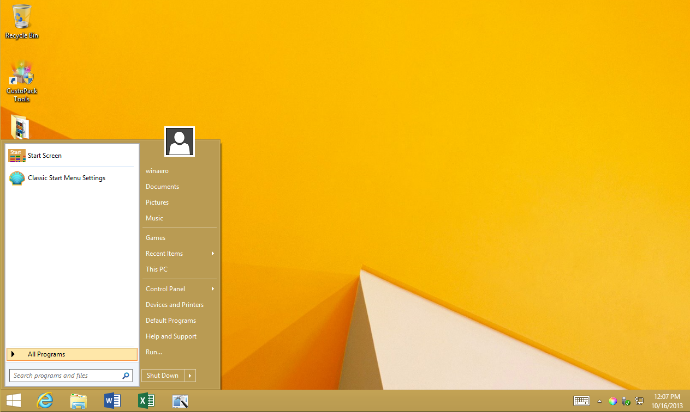
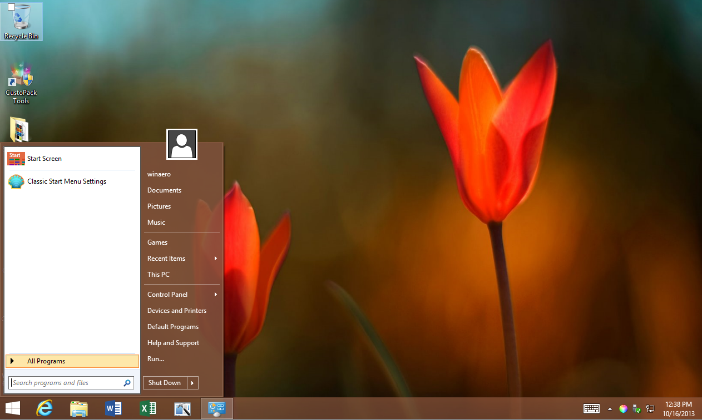
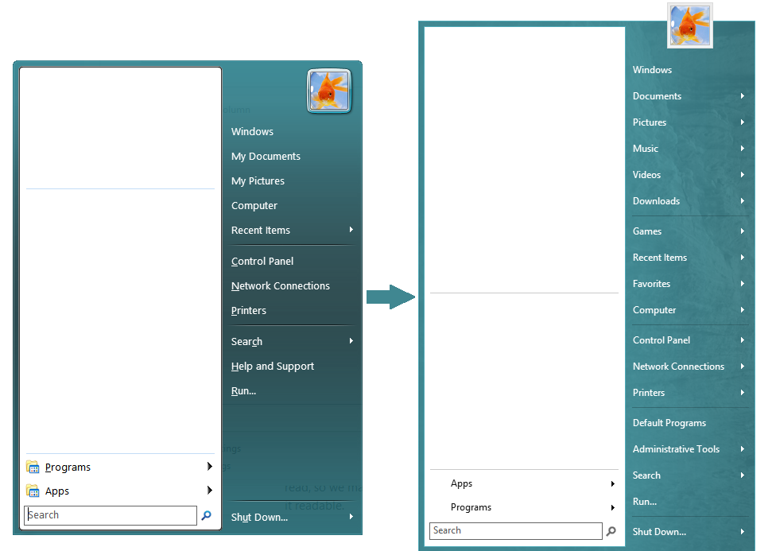

For those who are using Windows 8.1 RTM, you will find that the taskbar color has been tweaked by Microsoft AGAIN and therefore the Start Menu skins shipping in Classic Shell no longer match the taskbar color.
So I prepared a modded skin which tries to preserve readability of the glass and still tries to match the taskbar color (it's not an exact color match yet if you use transparent menu but somewhat close, it's slightly darker to preserve readability
Download the skin here: Winaero Skin 2.0 for Classic Shell (the installer will set all values automatically depending on whether you choose opaque or transparent glass Start Menu+taskbar). Note this is a skin with .skin7 extension (Windows 7 style of the menu only).
Read here if you are interested in knowing why you need to adjust these values: http://www.classicshell.net/forum/viewtopic.php?t=1186&p=6210 (in a nutshell, with every release, MS tweaks the Aero appearance so one skin cannot satisfy all the different versions of Windows).
Despite this skin, there might be a slight shade mismatch with the default Windows 8.1 wallpapers if you are using transparent menu and you set the window color to Auto. That's because the default Windows 8 wallpapers aren't so good. Use normal wallpapers for normal people
And finally, show us your beautiful desktops if you want to
This is how the Winaero Skin 2.0 looks with opaque menu+taskbar.

And this is how it looks with transparent menu+ taskbar:

If you are using Windows 8.0, and/or the Classic with two column style of the menu, here is the older 1.0 version of the skin: Winaero Skin 1.0 (for Classic style of the menu (extension is .skin), tested on Windows 8 only). For Windows 8.1, it may not match the color.

Back up your settings before installing this as version 1.0 resets some settings. Version 2.0 which is for Windows 7 style doesn't reset settings.